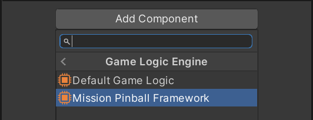
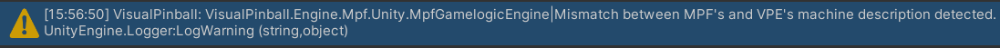

Usage
MPF support is implemented as a Gamelogic Engine. It's a Unity Component, so all you have to do is add it to the root GameObject of your table. To do this:
- Select the table in the hierarchy
- Click Add Component in the inspector
- Select Pinball -> Game Logic Engine -> Mission Pinball Framework.

If there is already another game logic engine component attached, remove it. There can be only one.
The machine folder
All files that MPF needs to run your table are contained in the so-called
machine folder.
When the package is first installed, it will create a default machine folder in
the Assets/StreamingAssets directory of your Unity project. This folder is
already set up for use with VPE and contains the necessary configuration to
allow MPF to drive the default VPX 'blank' table. This is all you need to know
to get started, but if you are serious about creating a table using MPF, you
should learn how to use it. The best way to do that is to follow the
official MPF tutorial.
Retrieve machine description
Note
While VPE could read the MPF machine config itself, we let MPF handle it. That means we run MPF with the given machine config and then query its hardware. While this is a bit slower, it has the advantage of coherent behavior between edit time and runtime, and doesn't add an additional maintenance burden.
Since the game logic engine is the part of VPE that provides switch, coil, and
lamp definitions so VPE can link them to the table during gameplay, you'll need
to retrieve them from MPF. You can do this by clicking Get Machine Description
in the MpfGamelogicEngine inspector. If VPE successfully retrieved the machine
description from MPF, you will see the coils, switches and lamps defined in your
MPF config file show up in the MpfGamelogicEngine inspector. The description
will be stored in the component. You will only need to do this again when you
update the MPF machine config or replace the MpfGamelogicEngine component.
Visual Pinball Engine compares its stored machine description with the one used
by MPF every time you start the game. Look out for this warning in the Unity
console:

Wire it up
Now that VPE knows which switches, coils, and lamps MPF expects, you'll need to
associate them with the appropriate game items on your playfield in Unity. Click
on Populate Hardware in the MpfGamelogicEngine inspector and use the
switch,
coil, and
lamp manager to create the
neccessary references.
You can watch the entire process in a quick video here:
Note
The MPF integration package has been updated since the recording of this video, so the user interface will look different for you, but the process is still the same.